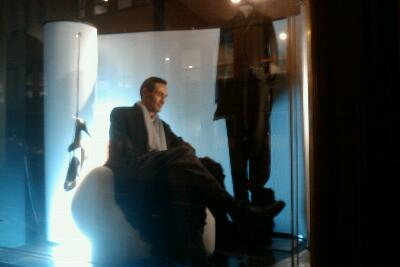
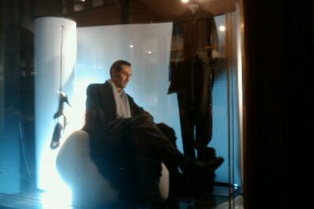
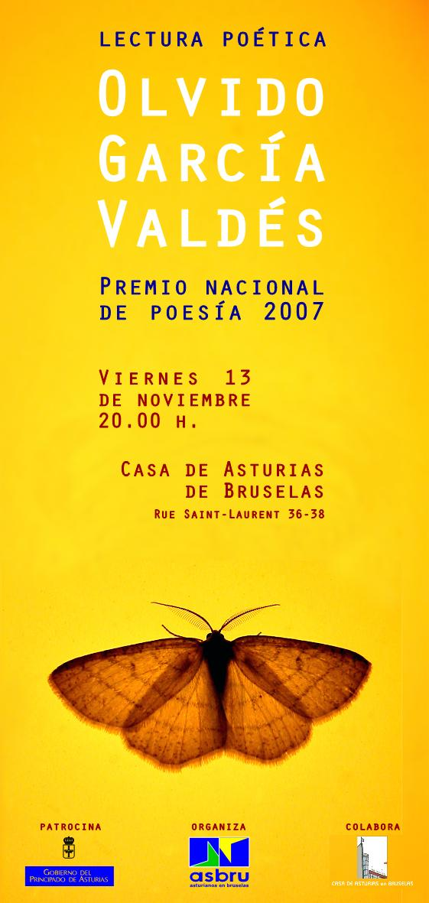

Mejor lugar que tu propio escaparate para una entrevista hay pocos.

El blog-guía escrito por españoles en Bruselas para los hispanoparlantes que viven aquí y para los turistas que aprovechan los vuelos baratos para descubrir el chocolate, la cerveza, la Grand Place y tantas otras cosas buenas.

Mejor lugar que tu propio escaparate para una entrevista hay pocos.
Olvido comparte con la comunidad bloguera un modo de estar en el mundo a través de la expresión de lo que piensas y sientes acerca de aquello que te rodea. Los temas que mas le interesan son el cuerpo, el paso del tiempo, lo que nos hace conocernos….
La poetisa asturiana, Premio Nacional de Poesia 2007 por su poemario Y todos estábamos vivos, leerá en Bruselas una selección de sus poemas y debatirá con el público sobre las particularidades de su obra entre la que destaca libros de poesía El tercer jardín (1986), Exposición (1990, Premio Ícaro de Literatura), Ella, los pájaros (1994), Caza nocturna (1997) y Del ojo al hueso (2001). En 2008 vio la luz su antología Esa polilla que delante de mí revolotea, lectura fundamental para explorar la lírica heterodoxa y muy personal.
El evento ha sido programado por ASBRU y tendrá lugar el viernes 13 de noviembre en la Casa de Asturias. El acto se completará con la degustación de un vino español.

Menuda alegría me acabo de llevar. Google ha subido a Blog Bruselas de categoría y ya tiene un Page Rank 5. ¡Olé!
Qué buena sorpresa para el día antes de la quedada bloggera en Bruselas. ¡No olvidéis el disfraz!
 Quién conoce Bruselas sabe que es tropical, de ahí las palmeras. ¡Sí es que hace un buen tiempo que no hay quién lo aguante!
Quién conoce Bruselas sabe que es tropical, de ahí las palmeras. ¡Sí es que hace un buen tiempo que no hay quién lo aguante!

No parece qué sea la misma revista Hola que en España.
Viñeta de apertura del tebeo De val der blinden. Yo acabo hablando flamenco por narices.